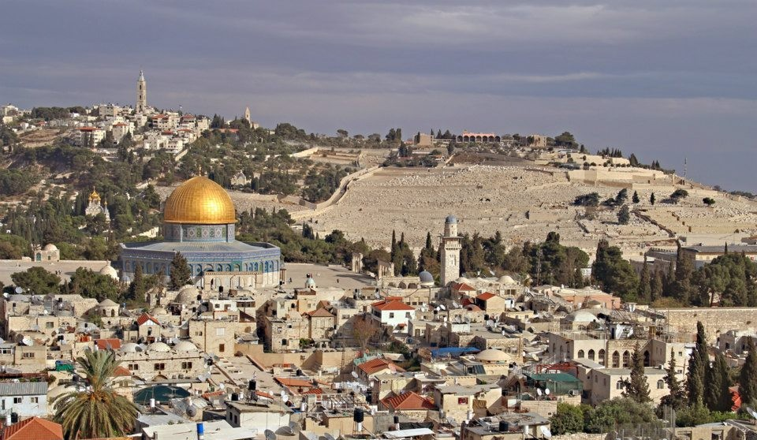
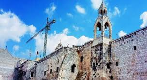
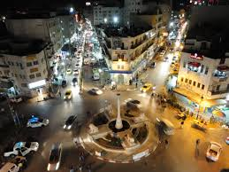
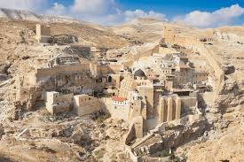
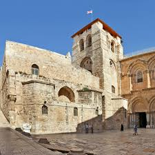
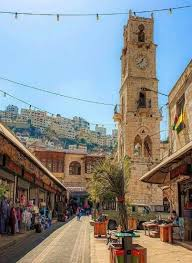

Jerusalem

The spiritual heart of Palestine, known for its deep religious and historical importance to Islam, Christianity, and Judaism.
- Al-Aqsa Mosque
- Church of the Holy Sepulchre
- Old City Markets
Bethlehem

The birthplace of Jesus Christ, attracting pilgrims from around the world.
- Church of the Nativity
- Manger Square
- Milk Grotto
Ramallah

A vibrant cultural hub filled with art galleries, music venues, and cafes.
- Yasser Arafat Museum
- Palestinian Cultural Palace
- Al-Manara
Jericho

One of the world’s oldest cities, famous for its archaeological treasures and desert landscapes.
- Mount of Temptation
- Hisham’s Palace
- Tall-Sultan
Hebron

Known for its glass and pottery crafts and the historic Ibrahimi Mosque.
- Ibrahimi Mosque
- Old City Market
- Hebron Glass Factory
Nablus

Known for its traditional markets, soap-making industry, and delicious knafeh dessert.
- Old City of Nablus
- Mount Gerizim
- Nablus Soap Factory